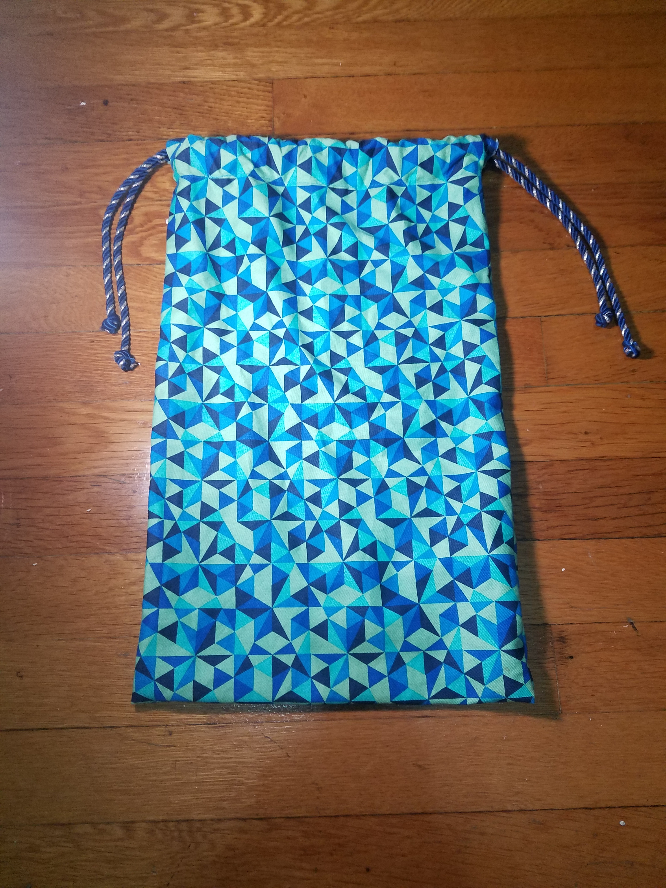
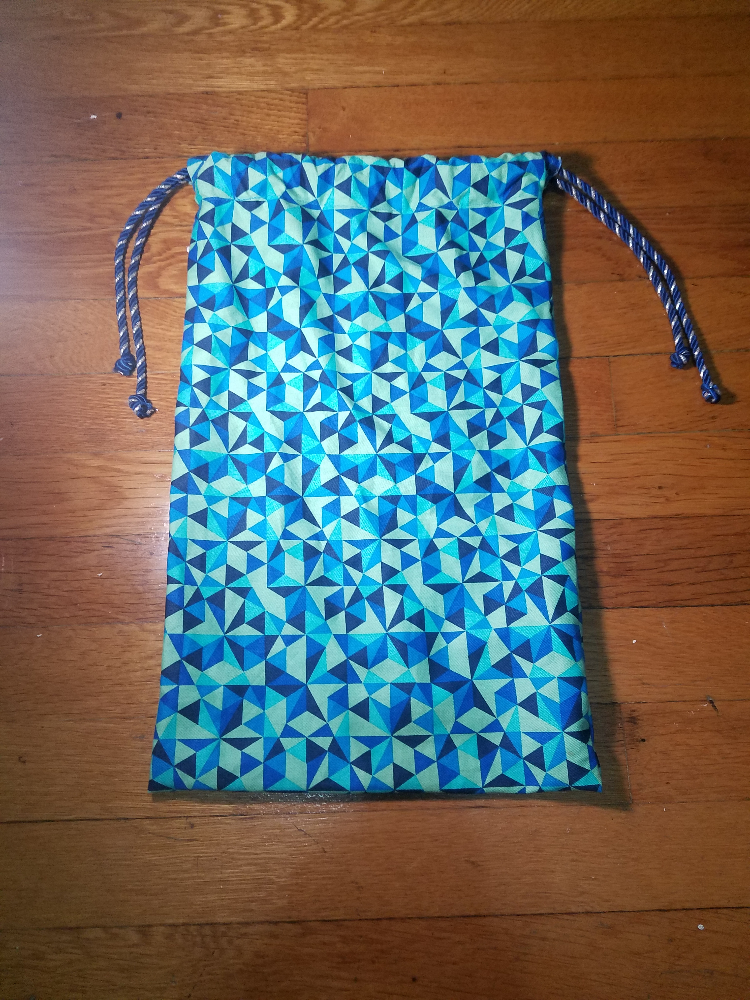

This project is great for scrap fabric that you have laying around the house!
1 yard of fabric will make both the zippered pouch and the drawstring bag.
Supplies
- 1 yard non-stretch fabric
- 1 7" zipper
- Matching thread
- Straight pins
- 1 yard or cord or ribbon
- Tailors chalk
- Iron
- Seam ripper
- Zipper foot for your sewing machine
 
